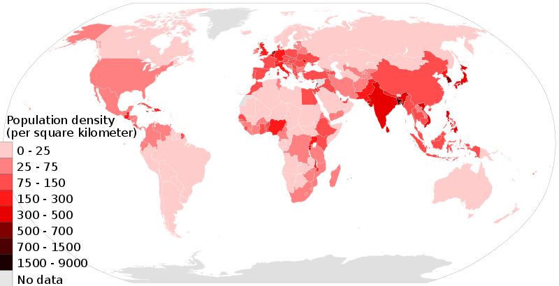

International food imports and exports
The World Bank reported that the European Union was the top food importer in 2005, followed at a distance by the USA and Japan. Britain's need for food was especially well illustrated in World War II. Despite the implementation of food rationing, Britain remained dependent on food imports and the result was a long term engagement in the Battle of the Atlantic.
Food is traded and marketed on a global basis. The variety and availability of food is no longer restricted by the diversity of locally grown food or the limitations of the local growing season.Between 1961 and 1999, there was a 400% increase in worldwide food exports.Some countries are now economically dependent on food exports, which in some cases account for over 80% of all exports.
In 1994, over 100 countries became signatories to the Uruguay Round of the General Agreement on Tariffs and Trade in a dramatic increase in trade liberalization. This included an agreement to reduce subsidies paid to farmers, underpinned by the WTO enforcement of agricultural subsidy, tariffs, import quotas, and settlement of trade disputes that cannot be bilaterally resolved.Where trade barriers are raised on the disputed grounds of public health and safety, the WTO refer the dispute to the Codex Alimentarius Commission, which was founded in 1962 by the United Nations Food and Agriculture Organization and the World Health Organization. Trade liberalization has greatly affected world food trade.[113]
Marketing and retailing

Food marketing brings together the producer and the consumer. The marketing of even a single food product can be a complicated process involving many producers and companies. For example, fifty-six companies are involved in making one can of chicken noodle soup. These businesses include not only chicken and vegetable processors but also the companies that transport the ingredients and those who print labels and manufacture cans. The food marketing system is the largest direct and indirect non-government employer in the United States.
In the pre-modern era, the sale of surplus food took place once a week when farmers took their wares on market day into the local village marketplace. Here food was sold to grocers for sale in their local shops for purchase by local consumers. With the onset of industrialization and the development of the food processing industry, a wider range of food could be sold and distributed in distant locations. Typically early grocery shops would be counter-based shops, in which purchasers told the shop-keeper what they wanted, so that the shop-keeper could get it for them.
In the 20th century, supermarkets were born. Supermarkets brought with them a self service approach to shopping using shopping carts, and were able to offer quality food at lower cost through economies of scale and reduced staffing costs. In the latter part of the 20th century, this has been further revolutionized by the development of vast warehouse-sized, out-of-town supermarkets, selling a wide range of food from around the world.
Unlike food processors, food retailing is a two-tier market in which a small number of very large companies control a large proportion of supermarkets. The supermarket giants wield great purchasing power over farmers and processors, and strong influence over consumers. Nevertheless, less than 10% of consumer spending on food goes to farmers, with larger percentages going to advertising, transportation, and intermediate corporations.
Prices
>
Food, meat, dairy, cereals, vegetable oil, and sugar price indices, deflated using the World Bank Manufactures Unit Value Index (MUV)
It is rare for price spikes to hit all major foods in most countries at once, but food prices suffered all-time peaks in 2008 and 2011, posting a 15% and 12% deflated increase year-over-year, representing prices higher than any data collected.
In December 2007, 37 countries faced food crises, and 20 had imposed some sort of food-price controls. In China, the price of pork jumped 58% in 2007. In the 1980s and 1990s, farm subsidies and support programs allowed major grain exporting countries to hold large surpluses, which could be tapped during food shortages to keep prices down. However, new trade policies had made agricultural production much more responsive to market demands, putting global food reserves at their lowest since 1983.
Rising food prices in those years have been linked with social unrest around the world, including rioting in Bangladesh and Mexico, and the Arab Spring.Food prices worldwide increased in 2008.One cause of rising food prices is wealthier Asian consumers are westernizing their diets, and farmers and nations of the third world are struggling to keep up the pace. The past five years have seen rapid growth in the contribution of Asian nations to the global fluid and powdered milk manufacturing industry, which in 2008 accounted for more than 30% of production, while China alone accounts for more than 10% of both production and consumption in the global fruit and vegetable processing and preserving industry.
In 2013 Overseas Development Institute researchers showed that rice has more than doubled in price since 2000, rising by 120% in real terms. This was as a result of shifts in trade policy and restocking by major producers. More fundamental drivers of increased prices are the higher costs of fertiliser, diesel and labour.
Parts of Asia see rural wages rise with potential large benefits for the 1.3 billion (2008 estimate) of Asia's poor in reducing the poverty they face. However, this negatively impacts more vulnerable groups who don't share in the economic boom, especially in Asian and African coastal cities. The researchers said the threat means social-protection policies are needed to guard against price shocks. The research proposed that in the longer run, the rises present opportunities to export for Western African farmers with high potential for rice production to replace imports with domestic production.
Most recently, global food prices have been more stable and relatively low, after a sizable increase in late 2017, they are back under 75% of the nominal value seen during the all-time high in the 2011 food crisis.
As investment
Institutions such as hedge funds, pension funds and investment banks like Barclays Capital, Goldman Sachs and Morgan Stanley have been instrumental in pushing up prices in the last five years, with investment in food commodities rising from $65bn to $126bn between 2007 and 2012, contributing to 30-year highs. This has caused price fluctuations which are not strongly related to the actual supply of food, according to the United Nations. Financial institutions now make up 61% of all investment in wheat futures. According to Olivier De Schutter, the UN special rapporteur on food, there was a rush by institutions to enter the food market following George W Bush's Commodities Futures Modernization Act of 2000. De Schutter told the Independent in March 2012: "What we are seeing now is that these financial markets have developed massively with the arrival of these new financial investors, who are purely interested in the short-term monetary gain and are not really interested in the physical thing – they never actually buy the ton of wheat or maize; they only buy a promise to buy or to sell. The result of this financialisation of the commodities market is that the prices of the products respond increasingly to a purely speculative logic. This explains why in very short periods of time we see prices spiking or bubbles exploding, because prices are less and less determined by the real match between supply and demand." In 2011, 450 economists from around the world called on the G20 to regulate the commodities market more.
Some experts have said that speculation has merely aggravated other factors, such as climate change, competition with bio-fuels and overall rising demand. However, some such as Jayati Ghosh, professor of economics at Jawaharlal Nehru University in New Delhi, have pointed out that prices have increased irrespective of supply and demand issues: Ghosh points to world wheat prices, which doubled in the period from June to December 2010, despite there being no fall in global supply.